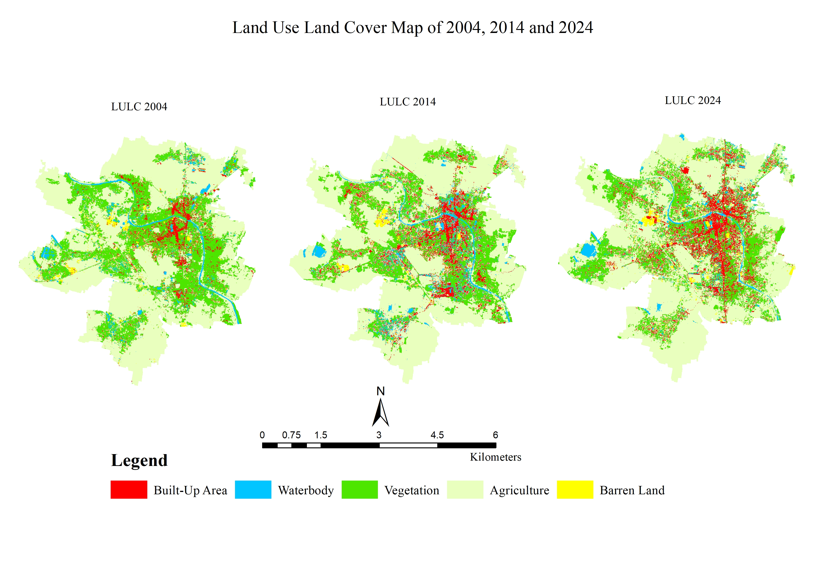
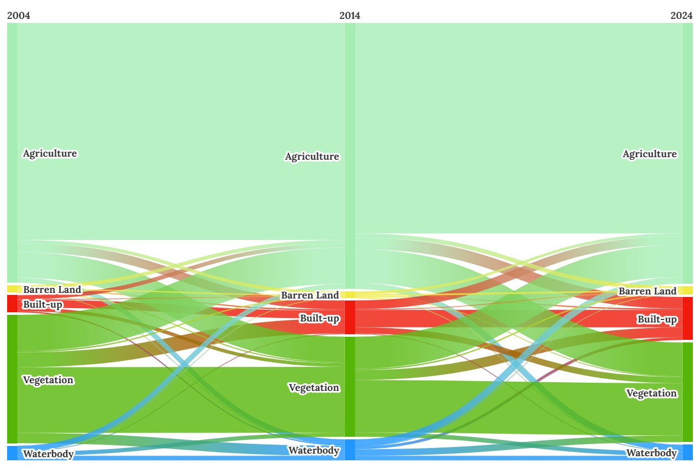
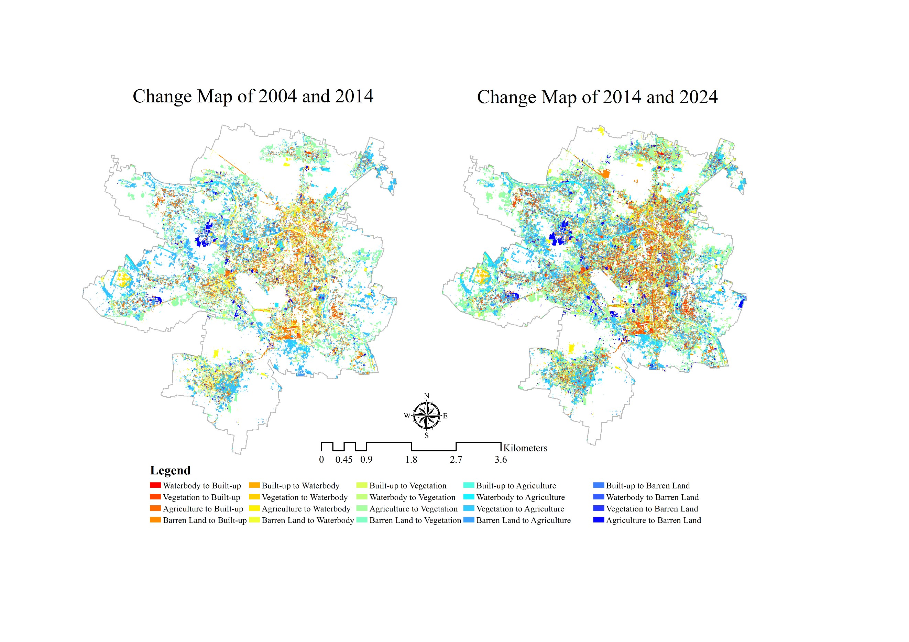
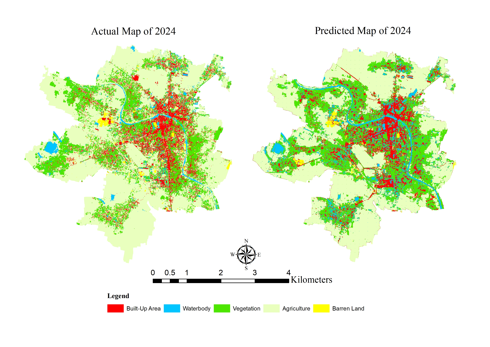
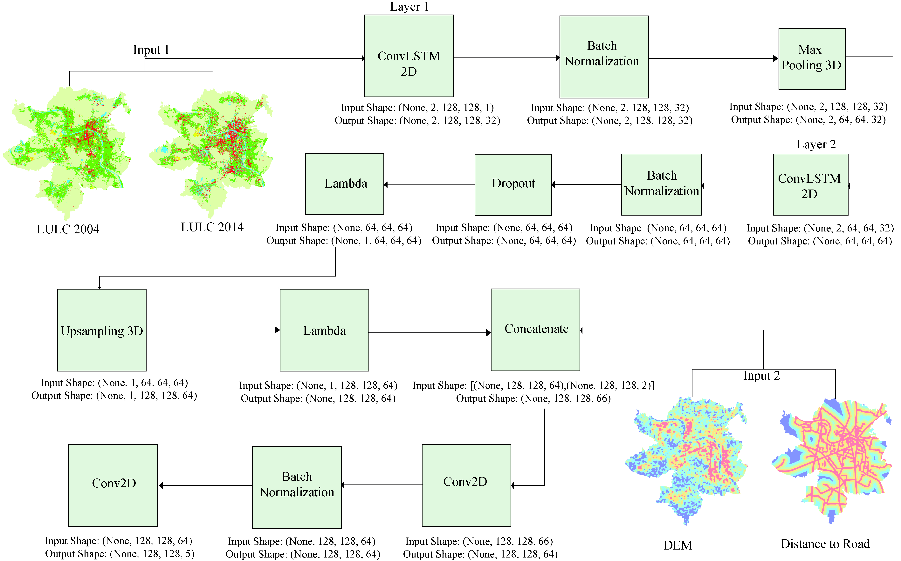
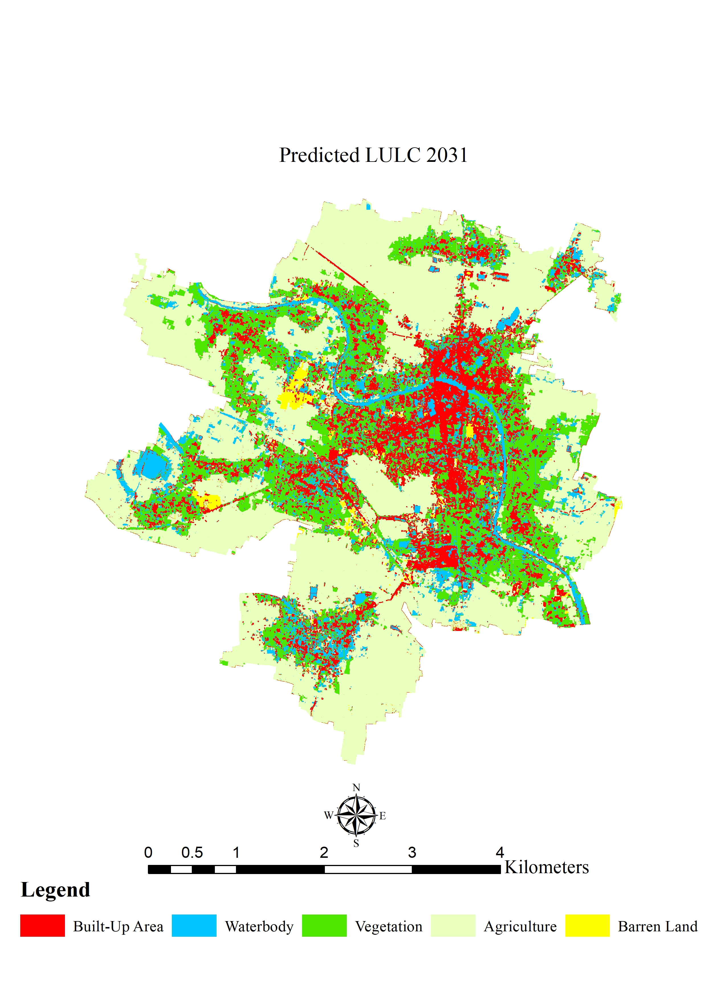
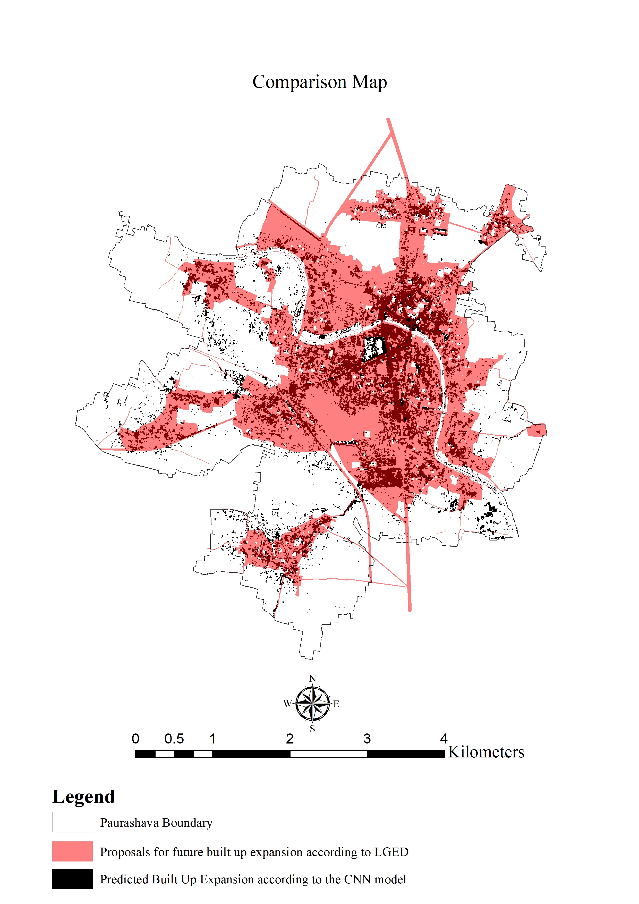
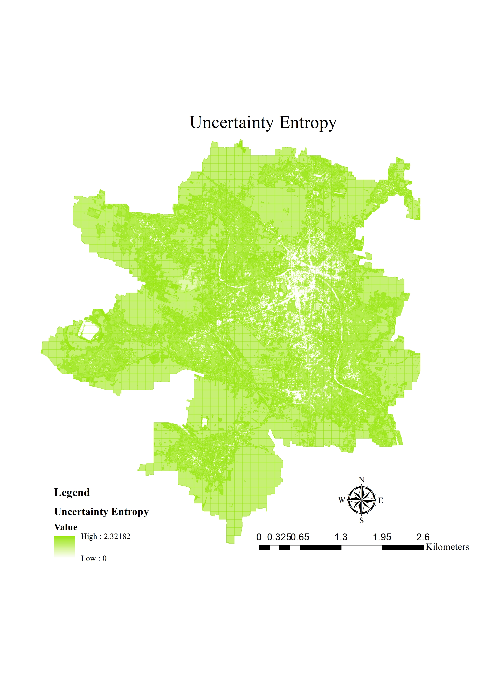
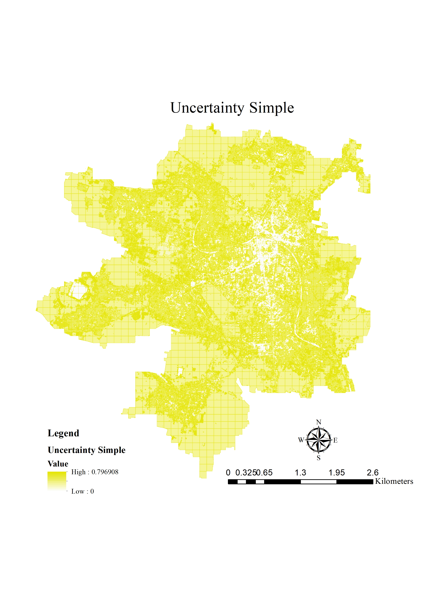

📝
Project: Urban Growth Framework & Analysis.
Objectives
- To predict land use/land cover (LULC) changes of a municipality in Bangladesh using a ConvLSTM model with static drivers (DEM, distance to road).
- Comparison of the predicted growth with the proposals of the municipality’s master plan.
This page summarizes an end-to-end workflow for growth-pattern mapping (supervised classification and change analysis) and future LULC prediction using ConvLSTM in a data-scarce context, with an explicit comparison to the municipality’s master plan proposals.
Replace this description with your own short abstract if you want—layout will remain the same.
Growth Pattern Analysis by Maximum Likelihood Supervised Classification
Land Cover Maps

Land Use Transitions

- Vegetation and agriculture were the major sources of built-up growth.
- Bidirectional transitions observed between vegetation and agriculture.
- Built-up areas increased from 0.88 km² (4.01%) in 2004 → 2.22 km² (10.07%) in 2024.
Change & Comparison
Change Detection

Actual vs Predicted (2024)

- Actual built-up: 2.22 km²
- Predicted built-up: 2.48 km² (well aligned, slight overestimation)
Model
Model Architecture

ConvLSTM Setup
- Inputs: LULC (2004, 2014), DEM, Distance-to-road (patches 128×128)
- Layers: 2 × ConvLSTM2D (filters: 32, 64), batch norm, dropout, up/down-sampling
- Loss: Categorical Cross-Entropy, Optimizer: Adam (lr=0.0001)
- Metrics: Overall Accuracy (65%), F1 Score (66%), QADI (0.09–0.13)
Prediction
Predicted LULC (2031)

Comparison with Master Plan (2031)

- Model forecasts built-up growth to 3.53 km² by 2031.
- Some “urban deferred” zones in the master plan showed discrepancies with actual growth direction.
Uncertainty Analysis
Entropy vs Uncertainty


- Low entropy & high confidence in central built-up zones.
- Higher uncertainty in transitional zones (vegetation/agriculture).
Key Findings
- Built-up growth followed a linear, road-oriented pattern (N7 highway, Chitra river).
- Vegetation decreased (30.04% → 23.31%), while agriculture remained mostly stable.
- Waterbodies declined from 1.74 km² (2014) → 0.81 km² (2024), reflecting weak enforcement of conservation policies.
- ConvLSTM predictions aligned closely with actual 2024 LULC, outperforming CA–ANN.
- Uncertainty analysis confirmed reliable classification in central urban zones.
- Master plan (2031) projections did not fully capture growth in “deferred” areas.
Takeaways
- ConvLSTM provides a robust framework for predicting small-town urban growth using freely available imagery.
- Results highlight the importance of integrating ML/DL with planning to reduce reliance on outdated population-based projections.
- Findings can guide policy-makers in revising master plans and adopting evidence-based zoning for sustainable development.